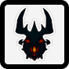

ПОКРОКОВИЙ ГАЙД ЯК СТАТИ “НАЙКРАЩІМ” В ДОТА 2
by pisyapopa1
Крок 1.1: Встановити Defence Of the Ancients 2

Крок 1.2: Оберіть героя

Крок 1.3: Перші ігри

Крок 1.4: Перший блин комом

Крок 1.5: Легчайша. Для кого? Для вєлічайшого

Крок 2.1: Ти - герой цього кіно
Крок 2.2: Дота 2 - це життя

Крок 2.3: Живи в кайф